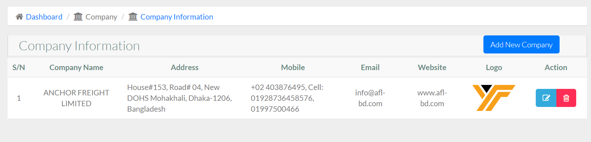

FREIGHT FORWARDING MANAGEMENT SOFTWARE
About FREIGHT FORWARDING SOFTWARE
In today's international marketplace, using traditional techniques to manage import and export
processes can result in delays, errors, and inefficiencies. A Freight Forwarding Management
Software (FFS) provides a cutting-edge solution for modernizing and streamlining these
complicated operations, allowing firms to operate more efficiently and competitively.
FFS offers an integrated platform for managing all areas of international trade,
including order management and compliance documents. The program ensures precise cargo tracking,
seamless customs procedure management, and efficient supplier-buyer cooperation by leveraging real-time
data and automation. This innovative solution lowers manual errors, increases visibility into supply
chain activities, and allows for faster decision-making.
Businesses can use FFS to optimize their logistics operations, lower operational costs, and
increase customer satisfaction by delivering items on time and in accordance with global trade
regulations. The software's user-friendly design and comprehensive capabilities enable businesses
to stay ahead in the competitive global market, making it a must-have tool for modern import and
export administration.
Why is Freight Forwarding used?
Freight Forwarding Software is a complete digital solution that streamlines and improves the operations of international trade firms. It facilitates and automates the entire import and export process, from order administration to shipment tracking and documentation. The software also improves inventory management, guarantees compliance with global trade regulations, and gives real-time information about trade activity. Additionally, it frequently contains capabilities for currency conversion, tariff computations, and multi-language compatibility, allowing firms to work successfully internationally. This program enables businesses to optimize global trade procedures, decrease errors, and increase overall efficiency.
Sea Import Manage
Sea Export Manage
Air Import Manage
Air Export Manage
Agent Manageme
Consignee Manageme
Shipper Manageme
Notify Manage
shipment Mood
Booking Manage
Quantity Manage
Master BL Manage
Order Manage
Invoice Manage
Import Report manage
Export Report Manage
Account Manage
Server requirement
Server
Our file is compatible with any Apache.
Any other server is NOT officially supported, and we CANNOT assist with any server
configuration if your server runs anything other than Apache.
PHP Version
Requires PHP from v7.1.3
Although PHP v7.1.3 can be used with Freight Forwarding but later if you face any issues, the first thing which we
would suggest over support ticket to you will be to fall back to PHP v7.1.3 as that's the only
Officially support PHP version.
PHP Extensions
- OpenSSL PHP Extension
- PDO PHP Extension
- Mbstring PHP Extension
- Tokenizer PHP Extension
- XML PHP Extension
- Ctype PHP Extension
- JSON PHP Extension
- ZIP PHP Extension
- FileInfo PHP Extension
- BCMath PHP Extension
- ionCube Loader PHP Extension
- GD PHP extension
Consider enabling the OpCache PHP Extension for improved performance. It is optional but encouraged.
Laravel Version
Freight Forwarding requires Laravel from v5.7
Although Laravel v5.7 can be used with Freight Forwarding but later if you face any issues, the first thing
which we would suggest over support ticket to you will be to fall back to Laravel v5.7 as that's
the only Officially support Laravel version.
Laravel Extensions
- Laravel blade snippets
- Laravel snippets
- Laravel Artisan
- Laravel Extra Intellisense
- Laravel goto view
- laravel-jump-controller
- laravel-goto-components
- Laravel Blade formatter
- Laravel Create View
- Laravel Blade Wrapper
- DotENV
- DevDb
Database MySQL
Freight Forwarding software, driven by a MySQL database, is a powerful solution for streamlining and managing all elements of international trade processes. Using MySQL's dependability and efficiency, the software provides smooth data management, guaranteeing that import and export records are accurately stored, accessed, and analyzed. MySQL's scalable architecture allows for high transaction volumes, making it excellent for processing large amounts of trade data, such as invoices, shipping details, and inventory management. This interface enables firms to quickly track trade activity, generate reports, and comply with international trade standards, all while taking use of MySQL's fast query performance and security capabilities.
Software Features
Our Freight Forwarding software is intended to streamline and improve your international trade operations. It provides a complete set of capabilities, such as automated paperwork, real-time shipment tracking, and customs compliance management. With its simple interface, businesses can quickly manage, generate invoices, and handle numerous currencies.
Company Info
The company Info feature in Freight Forwarding Software is critical for organizing and displaying crucial corporate details, ensuring that accurate and up-to-date information is always available. This feature enables administrators to enter, amend, and preserve vital company information. This module is divided into some main submodules:
- Company
- Bank
Company
The Company function in the Freight Forwarding Software simplifies the management of company profiles within the system, allowing administrators to easily handle critical company information. This tool enables users to conveniently manage a variety of company-specific parameters, assuring accurate and consistent data throughout all activities. Each firm entry in the list has a "EDIT" symbol, which allows administrators to easily update or modify existing company information. Additionally, a "DELETE" option is available to remove old or erroneous firm profiles, ensuring that the system remains current and relevant.
To change a company's information, click the Edit Icon. This action will launch a popup window with the company's current information pre-filled into the form. Make the necessary changes to the company's information in the form, then click the Update button to save them.

To add a new company, click the "Add New Company" button, which will bring up a popup window. In this form, you'll need to enter essential details about the company, including the company name, address, mobile number, email, website, and logo. Additionally, you can specify whether the company is currently active or inactive. Once all the required information is filled in, submit the form to successfully add the company to the system.

Bank
The Bank component in a freight forwarding software's corporate info module enables enterprises to effectively handle their financial information. This tool allows users to simply add, update, and delete bank information associated to the organization. Whether changing account information or removing old information, the process is simple and safe, ensuring that all financial data is correct and up to date. This functionality not only streamlines financial management but also ensures that all banking information is readily available when required, resulting in smoother financial transactions within freight forwarding operations.
To edit a bank, click the "EDIT ICON," which will bring up a new popup window. This box allows you to update the essential bank information by entering new information. Once you've made your changes, simply click the "Update" button to save them.

To add a new bank, select the "Add New Bank" button, which will open a popup window. This form requires you to enter the following bank information: Account Name, Bank Name, Branch Name, Account Number, and Swift Code. You can also change the bank's status to active or inactive, based on its current use. Once all of the essential information has been entered, submit the form to preserve the bank information.

Master Setup
The marine Import freight forwarding software enables the efficient handling of international marine shipments. This feature allows users to streamline the entire import process by offering tools for tracking container progress, handling shipping papers, and communicating with customs officials. Users may easily enter and retrieve shipment information, track freight movement from origin to destination, and manage a variety of import procedures. The sea import function, which includes automated notifications for critical events, interaction with customs systems, and real-time updates, ensures that all aspects of marine freight are rigorously managed, decreasing delays and increasing overall operating efficiency. This module is divided into some main submodules:
- Agent Manage
- Consignee Manage
- Shipper Manage
- Notify Manage
- Shipment Mood
Agent Manage
The Agent Manage function in the master section is a strong tool that simplifies the management of agents participating in import and export transactions. This tool enables users to easily amend and update agent information, ensuring that all records are accurate and up to date. It also includes a handy delete function, which allows users to easily erase obsolete or inaccurate agent information. The Agent Manage feature improves operational efficiency by providing quick access to critical agent data, allowing businesses to maintain seamless and organized agent interactions.
To edit a agent, click the "EDIT ICON," which will bring up a new popup window. This box allows you to update the essential agent information by entering new information. Once you've made your changes, simply click the "Update" button to save them.

To add a new agent, select the "Add New Agent" button, which will launch a new form window. This form requires you to enter crucial information about the agent, such as their status, company name, address, and a mobile number. You will also define their function or designation inside the organization, as well as their status (active or inactive). Once you've completed all of the essential fields, click "Submit" to save the new agent's information.

Consignee Manage
The "Consignee Manage" feature in the master info module gives users complete capabilities for properly managing consignee information. This functionality enables the smooth editing and updating of consignee information, ensuring that all records are accurate and up to date. Users can change important information such as contact information, addresses, and other relevant data. Furthermore, the remove option allows for the removal of old or wrong consignee entries, facilitating data administration and ensuring system integrity. This feature improves operational efficiency by providing a simple and user-f
To edit a consignee, click the "EDIT ICON," which will bring up a new popup window. This box allows you to update the essential consignee information by entering new information. Once you've made your changes, simply click the "Update" button to save them.

To add a new consignee, select the "Add New Consignee" button, which will launch a new form window. This form requires you to enter crucial information about the consignee, such as their status,order type, company name, and address. You will also define their function or designation inside the organization, as well as their status (active or inactive). Once you've completed all of the essential fields, click "Submit" to save the new consignee's information.

Shipper Manage
The "Shipper Manage" feature in the master information module provides extensive control over shipper data, easing the management process. Users can easily change existing shipper information, ensuring that contact information, company profiles, and operating details are current and accurate. Additionally, the tool includes a simple delete option for eliminating old or irrelevant shipper entries. This dual feature contributes to a clean and structured database, boosting operational efficiency and accuracy in freight management.
To edit a shipper, click the "EDIT ICON," which will bring up a new popup window. This box allows you to update the essential shipper information by entering new information. Once you've made your changes, simply click the "Update" button to save them.

To add a new shipper, select the "Add New Shipper" button, which will launch a new form window. This form requires you to enter crucial information about the shipper, such as their status,company name, and address. You will also define their function or designation inside the organization, as well as their status (active or inactive). Once you've completed all of the essential fields, click "Submit" to save the new shipper's information.

Notify Manage
The Manage Notifications function is intended to expedite communication and improve notification handling. This tool enables customers to efficiently monitor and manage notifications relating to many areas of their freight forwarding operations. With the option to edit notifications, users may simply adjust the content or details of existing alerts to guarantee accuracy and relevancy. Furthermore, the delete functionality allows users to erase old or unneeded notifications, keeping the system clutter-free and focused on the most recent information. This complete management capacity improves operating efficiency and keeps users informed with timely and relevant messages.
To edit a notify, click the "EDIT ICON," which will bring up a new popup window. This box allows you to update the essential notify information by entering new information. Once you've made your changes, simply click the "Update" button to save them.

To add a new notify, select the "Add New notify" button, which will launch a new form window. This form requires you to enter crucial information about the notify, such as their status,company name, and address. You will also define their function or designation inside the organization, as well as their status (active or inactive). Once you've completed all of the essential fields, click "Submit" to save the new notify's information.

Shipment Mood
The Shipment Mood function streamlines shipment statuses and moods, ensuring effective tracking and processing of goods. This feature enables users to categorize and change the current status of shipments, such as "In Transit," "Delivered," or "Delayed," as well as assign a mood to express the condition or feeling connected with each shipment, such as "On Time," "Urgent," or "Under Review." Users can easily change these statuses and moods to ensure that information is accurate and up to date. The feature also contains a delete option, which allows users to remove obsolete or incorrect data from the system, ensuring that the shipment information remains accurate and relevant. This functionality improves communication and decision-making in the logistics and freight management processes.
To edit a shipment, click the "EDIT ICON," which will bring up a new popup window. This box allows you to update the essential shipment information by entering new information. Once you've made your changes, simply click the "Update" button to save them.

To add a new shipment, select the "Add New Shipment" button, which will launch a new form window. This form requires you to enter crucial information about the shipment, such as their shipment mood. You will also define their function or designation inside the organization, as well as their status (active or inactive). Once you've completed all of the essential fields, click "Submit" to save the new shipment's information.

Sea Import
The Charge Management function in the courier management system simplifies the administration of delivery charges across different zones and services. Administrators can efficiently create, update, and manage various charge structures, ensuring accurate billing and pricing strategies. The feature includes an "EDIT" icon, allowing for swift modifications to existing charge details, providing real-time updates that enhance the flexibility and accuracy of the pricing model. Additionally, the search functionality within Charge Management is highly effective, enabling users to quickly locate specific charges, thereby improving the efficiency of managing pricing policies. This module is divided into some main submodules:
- Booking Details
- Quantity Details
- Master BL Details
- Container Details
Booking Details
The "Booking Details" function in the marine import module enables customers to handle and track all important information for import shipments. This feature includes the ability to amend and delete booking details, allowing users to simply update information when changes occur or remove unneeded entries. The edit tool allows you to change shipment details, while the delete option helps keep the system structured and clutter-free, ensuring that only the most correct and up-to-date booking information is preserved.

To edit a booking, click the "EDIT ICON," which will bring up a new popup window. This box allows you to update the essential booking information by entering new information. Once you've made your changes, simply click the "Update" button to save them.

To add a new booking, select the "Add New Booking" button, which will launch a new form window. This form requires you to enter crucial information about the booking, such as their date,booking reference,shipping mood,shipper/to,address, consignee,shipper for master,notify, port of discharge, port of destination,invoice number etc. You will also define their function or designation inside the organization, as well as their status (active or inactive). Once you've completed all of the essential fields, click "Submit" to save the new booking's information.

Quantity Details
The Quantity Details feature in the marine import module gives a detailed breakdown of cargo quantities for each shipment. This tool enables users to enter and track a variety of amount parameters, including the number of containers, package counts, and weight measurements, assuring proper inventory and shipping management. It supports a variety of measuring units, making it easier to manage different sorts of freight. The function also features real-time updates and simple modifications, allowing for efficient handling of partial shipments, overages, or shortages. This assures accurate documentation and enhances overall logistics planning and reporting.
Master BL Details
The marine import function of freight forwarding software includes Master BL (MBL) Details, which provide a thorough picture of the fundamental shipping document used in international trade. This section enables users to enter and manage key information such as the MBL number, shipper and consignee information, vessel and trip details, and port of origin and destination. It acts as the primary record for tracking the shipment's route from point of origin to final destination, ensuring that all parties involved receive correct and up-to-date data. The software often includes tools for uploading the MBL document, linking it to House Bills of Lading (HBLs), and managing associated papers, which streamlines the import process and improves visibility and control of shipments.
Container Details
The "Container Details" function in the sea import module allows for thorough administration and tracking of shipping containers. This feature enables customers to record and monitor critical information such as container numbers, sizes, and types, as well as the status of each container in transit. It also makes it easier to document loading and unloading dates, seal numbers, and cargo details, resulting in precise and timely updates. Furthermore, users can readily monitor the movement and condition of containers throughout the shipping process, increasing overall operational efficiency and lowering the chance of errors or delays.
Sea Export
The Sea Export feature in freight forwarding software speeds up the entire process of managing ocean freight shipments. It enables freight forwarders to efficiently manage bookings, documentation, cargo tracking, and compliance with international regulations. The feature often comprises tools for creating and managing shipping instructions, bills of lading, and other essential paperwork, as well as providing real-time shipment status information. This guarantees that all parties involved are kept informed and that freight arrives safely and on time, eliminating delays and improving overall operating efficiency. This module is divided into some main submodules:
- Booking Details
- Quantity Details
- Master BL Details
- Container Details
Booking Details
The marine export module's Booking Details function provides users with a full view of all critical booking information, allowing them to conveniently manage and trace shipments. This feature allows users to easily view, amend, and delete booking entries, ensuring that any changes or corrections are seamlessly integrated into the system. The user-friendly interface enables quick revisions, allowing logistics experts to keep accurate records, streamline shipment management, and assure smooth collaboration throughout the marine export process.

To edit a booking, click the "EDIT ICON," which will bring up a new popup window. This box allows you to update the essential booking information by entering new information. Once you've made your changes, simply click the "Update" button to save them.

To add a new booking, select the "Add New Booking" button, which will launch a new form window. This form requires you to enter crucial information about the booking, such as their date,booking reference,shipping mood,shipper/to,address, consignee,shipper for master,notify, port of discharge, port of destination,invoice number etc. You will also define their function or designation inside the organization, as well as their status (active or inactive). Once you've completed all of the essential fields, click "Submit" to save the new booking's information.

Quantity Details
In the sea export function, the Quantity Details section is critical for organizing and tracking the products being shipped. This section allows customers to enter and track different characteristics of their cargo, such as the number of containers, weight, volume, and individual item counts. Accurate quantity details allow optimal space utilization, precise billing, and adherence to shipping requirements. The program may also include options for categorizing items by kind, ensuring that each item is tracked and that the entire shipment is optimized for cost-effectiveness and timely delivery.
Master BL Details
The marine import function of freight forwarding software includes Master BL (MBL) Details, which provide a thorough picture of the fundamental shipping document used in international trade. This section enables users to enter and manage key information such as the MBL number, shipper and consignee information, vessel and trip details, and port of origin and destination. It acts as the primary record for tracking the shipment's route from point of origin to final destination, ensuring that all parties involved receive correct and up-to-date data. The software often includes tools for uploading the MBL document, linking it to House Bills of Lading (HBLs), and managing associated papers, which streamlines the import process and improves visibility and control of shipments.
Container Details
The "Master BL (Bill of Lading) Details" function manages all shipping documents required during the export process. This tool allows users to generate, update, and track the Master Bill of Lading, which is an important document that outlines the shipment's terms, including the carrier, cargo description, destination, and consignee information. The program simplifies the documentation process while maintaining accuracy and compliance with international shipping rules. It also improves communication among shippers, carriers, and consignees, increasing the efficiency of export processes.
Air Import
The Air Import function of freight forwarding software simplifies the administration of inbound air shipments by providing detailed tracking from point of origin to ultimate destination. This tool allows freight forwarders to quickly manage documentation, customs clearance, and real-time status updates, ensuring that shipments are processed smoothly and on time. It interfaces with a variety of carriers, automates duty and tax calculations, and offers full reporting and analytics. By centralizing all aspects of air import processes, this feature improves accuracy, minimizes manual workload, and increases customer satisfaction through transparent and efficient shipment management. This module is divided into some main submodules:
- Booking
- Details
Booking
The "Booking" feature simplifies the handling of air freight shipments. This tool enables customers to conveniently establish and manage bookings, ensuring that all necessary details such as shipping information, flight itineraries, and cargo specs are properly documented. Users may simply amend bookings to update or change information, and if a booking is no longer needed or was created in error, it can be deleted with a few clicks. This functionality improves operational efficiency by ensuring correct and up-to-date records, allowing for smooth air import processes.

To edit a booking, click the "EDIT ICON," which will bring up a new popup window. This box allows you to update the essential booking information by entering new information. Once you've made your changes, simply click the "Update" button to save them.

To add a new booking, select the "New Booking" button, which will launch a new form window. This form requires you to enter crucial information about the booking, such as their date,booking reference,shipper/to,address, consignee,notify, airport of discharge, airport of destination etc. You will also define their function or designation inside the organization, as well as their status (active or inactive). Once you've completed all of the essential fields, click "Submit" to save the new booking's information.

Details
The Details feature in the Air Import module provides a thorough overview of shipment-specific information. This tool allows users to enter and retrieve crucial data for air import shipments, such as shipment tracking numbers, airway bill details, consignee and shipper information, cargo description, weight, and measurements. It also simplifies the documentation process by managing relevant documents, such as customs declarations and import permits, assuring regulatory compliance. Furthermore, the Details feature streamlines communication with stakeholders by providing real-time updates and permitting accurate reporting, hence improving operational efficiency and transparency in managing air import procedures.
Air Export
The Air Export module in freight forwarding software automates the process of organizing and coordinating air shipments, assuring efficient handling from origin to destination. This module allows users to easily manage air cargo booking, documentation, and tracking, as well as receive real-time shipment status updates. It connects with airline and customs systems to automate compliance checks and documentation creation, resulting in fewer errors and delays. The Air Export module, which includes cargo consolidation, rate control, and reporting, promotes operational efficiency, visibility, and customer satisfaction in air freight forwarding. This module is divided into some main submodules:
- Booking
- Details
Booking
The booking simplifies the procedure of managing air shipments. It enables users to quickly create, update, and delete bookings while guaranteeing that all shipment data are correct and up to date. The ability to change bookings allows customers to easily alter flight itineraries, cargo details, and other critical information as needed, reducing errors and delays. The delete functionality allows you to eliminate bookings that are no longer needed, which keeps the system clean and orderly. This feature improves operational efficiency by offering a simple interface for handling air export bookings.

To edit a booking, click the "EDIT ICON," which will bring up a new popup window. This box allows you to update the essential booking information by entering new information. Once you've made your changes, simply click the "Update" button to save them.

To add a new booking, select the "New Booking" button, which will launch a new form window. This form requires you to enter crucial information about the booking, such as their date,booking reference,shipper/to,address, consignee,notify, airport of discharge, airport of destination etc. You will also define their function or designation inside the organization, as well as their status (active or inactive). Once you've completed all of the essential fields, click "Submit" to save the new booking's information.

Details
The Details feature in the Air Export module provides a thorough overview of shipment-specific information. This tool allows users to enter and retrieve crucial data for air export shipments, such as shipment tracking numbers, airway bill details, consignee and shipper information, cargo description, weight, and measurements. It also simplifies the documentation process by managing relevant documents, such as customs declarations and export permits, assuring regulatory compliance. Furthermore, the Details feature streamlines communication with stakeholders by providing real-time updates and permitting accurate reporting, hence improving operational efficiency and transparency in managing air export procedures.
Confirm Order
For the logistics process to be completed and streamlined, the "Confirm Order" capability is essential. Before an order is processed officially, consumers can inspect and verify its information using this tool. A thorough overview of the shipment's details, including the consignee, the nature of the cargo, and the routing information, is usually included. Users can verify accuracy and compliance with shipping standards by checking for any discrepancies or necessary modifications. After verification, an order can be confirmed with a single click, which initiates next steps in the logistics workflow, like shipping document generation, transportation scheduling, and notification to the appropriate parties. This feature offers a transparent audit trail of order confirmations, lowers errors, and improves operational efficiency. This module is divided into some main submodules:
- Sea Confirm Order
- Air Confirm Order
Sea Confirm Order
Users may quickly find and confirm orders with the "Confirm Order" option in freight forwarding software, which simplifies the order management process. With the use of this feature's extensive search capability, users may find specific orders fast using a variety of parameters, like order number, client name, or date. After selecting the appropriate order, users can quickly complete the confirmation process by reviewing the details and clicking a couple more times. By guaranteeing the timely and proper completion of all required tasks, this improves operational effectiveness and reduces errors in the order fulfillment process.

Air Confirm Order
The management and confirmation of air cargo orders is made easier with the "Air Confirm Order". With this feature, users can easily look for specific orders by utilizing different parameters, including the order number, the customer's name, or the shipment information. After locating the required order, users can click a few times to confirm the order, check its progress, and double-check its information. By eliminating manual data entry and offering real-time updates, this feature improves operational efficiency and guarantees that air freight orders are processed accurately and quickly.

Invoice Entry
The Invoice Entry feature in freight forwarding software makes recording and managing invoices simple and precise. Users can easily enter invoice information, such as shipment data, charges, and payment information, into the system. The built-in search functionality enables users to rapidly discover individual bills using criteria such as invoice number, date, or customer name, assuring timely access to critical financial documents. This feature improves operational efficiency, decreases manual errors, and allows for seamless interaction with other accounting and logistics operations, resulting in better control and monitoring of freight-related expenses.

Invoice Note Entry
The "Invoice Note Entry" feature in freight forwarding software automates the process of maintaining and entering invoice-related remarks. This tool enables users to effortlessly enter, amend, and organize notes linked with specific invoices, ensuring that all essential information is saved for future reference. The built-in search functionality improves efficiency by allowing users to rapidly discover certain notes using keywords or invoice numbers, saving time scrolling through data. This functionality is critical for keeping correct documentation and facilitating improved communication and tracking throughout the freight forwarding process.

Sea Import Invoice
The Sea Import Invoice function of freight forwarding software automates the management and processing of sea import invoices. It enables users to conveniently search for and retrieve invoice data using a variety of parameters, including invoice number, date, and supplier. This feature ensures easy access to relevant papers and allows for effective invoice verification and reconciliation. The system's straightforward search features, together with thorough invoice information, enable users to successfully manage import-related expenditures and keep correct financial records.

Note Entry
Note Entry is an essential feature for organizing financial documentation connected to shipping and logistics. This functionality allows users to create and manage credit and debit notes easily. A credit note is sent to refund or correct overcharges or returned products, whereas a debit note is used to obtain payment for further costs or inconsistencies. By incorporating this capability, the program enables precise financial tracking and reconciliation. Users can quickly enter information such as the cause for the adjustment, the related invoices, and the amounts involved. The technology automatically updates essential information and creates reports, speeding up the process and increasing financial transparency for all parties involved. This module is divided into some main submodules:
- Credit Note
- Debit Note
Credit Note
The Credit Note is intended to streamline and automate the process of issuing credit notes for a variety of transactions. This functionality allows users to efficiently record and maintain credit notes for freight and shipping activities. When a transaction modification or refund is required, users can easily generate a credit note by inputting pertinent information such as the transaction reference, reason for credit, and amount to be reimbursed. The software automatically updates the associated accounts and financial records, ensuring that the information is accurate and up to date. This functionality improves financial correctness, decreases manual errors, and increases overall operational efficiency in freight forwarding transactions.

Debit Note
The Debit Note is intended to streamline the process of storing and documenting debit notes in the logistics and transportation industries. This functionality allows users to create and track debit notes for various transactions and freight activities. It provides a disciplined strategy to recording any money owed by clients or vendors as a result of errors, additional costs, or revisions to shipping services. The Debit Note input method assures correct documentation, makes it easier to retrieve and examine financial information, and helps you comply with accounting rules. This feature increases financial transparency, cash flow management, and reconciliation by tying debit notes to the appropriate freight activities and billing records.

Import Report
The import report feature of freight forwarding software offers a detailed overview of all import activity over a specific time period. Users can use this functionality to generate thorough reports on import shipments, which include information such as origin, destination, shipping dates, and involved parties. Users can filter and create reports based on a variety of parameters, including shipment status, supplier, and specified time frames, allowing for more accurate tracking and analysis. The option to export these reports in a variety of formats, including PDF, Excel, and CSV, guarantees smooth connection with other systems and improves data accessibility. This feature promotes better decision-making and overall efficiency in import logistics management by offering actionable insights into import operations.
- Air Report
- Sea Report
Air Report
The Air Report offers a comprehensive overview of air freight operations, allowing users to track and manage shipments more efficiently. It combines critical data such as aircraft itineraries, cargo status, and shipment information, providing real-time updates and performance statistics. This function enables freight forwarders to track transit durations, identify potential delays, and optimize routes to ensure timely deliveries. Users can generate thorough reports tailored to their specific needs using customizable reporting choices, which improves decision-making and operational efficiency when managing air freight operations.
- Bill of Lading
- Manifest
- Invoice
- Credit Note
- Debit Note
Sea Report
The Sea Report feature in freight forwarding software provides comprehensive visibility and tracking of ocean shipments. It enables freight forwarders to generate detailed reports on various aspects of sea freight, including vessel schedules, container statuses, and transit times. Users can monitor shipment progress in real-time, track any delays, and ensure compliance with international shipping regulations. The feature also supports customizable report formats, allowing users to tailor the information to meet specific business needs, ultimately enhancing operational efficiency and customer satisfaction.
- Bill of Lading
- Manifest
- Invoice
- Credit Note
- Debit Note
Export Report
The Export Report streamlines the process of generating detailed reports on various logistics operations. This feature allows users to easily compile and export data related to shipments, customs clearance, financial transactions, and more, into commonly used formats like PDF, Excel, or CSV. By providing customizable report templates, it ensures that the exported reports are tailored to specific business needs, offering insights that help in decision-making, compliance, and performance tracking. The Export Report feature is essential for maintaining transparency and efficiency in freight forwarding operations.
- Air Report
- Sea Report
Air Report
The Air Export Report enhance the management of air cargo exports. This feature allows users to generate comprehensive reports that detail every aspect of the air export process, including shipment details, documentation, carrier information, and costs. By providing real-time data and insights, the Air Export Report helps logistics managers monitor the status of shipments, ensure compliance with international regulations, and optimize the efficiency of their operations. This feature is crucial for maintaining accurate records, improving transparency, and facilitating informed decision-making in air freight logistics.
- Bill of Lading

- Manifest

- Invoice

Sea Report
The Sea Export Report feature in freight forwarding software provides comprehensive insights into all aspects of sea freight export operations. This feature allows users to generate detailed reports on shipment statuses, cargo details, documentation, and financial transactions related to sea exports. By consolidating data from various stages of the shipping process, it enables efficient tracking and management of export activities, ensuring compliance with international trade regulations. Users can customize reports to meet specific business needs, facilitating informed decision-making and enhancing overall operational efficiency in managing sea freight exports.
- Bill of Lading

- Shipment Advice

- Invoice

- Credit Note

- Debit Note

Account
The Account offers a comprehensive solution for tracking financial activities and data. It allows customers to efficiently track freight-related expenses, invoices, payments, and revenue. This functionality allows for multi-currency transactions, ensuring accurate financial reporting across geographies. It simplifies the accounting process, lowers errors, and enhances financial transparency by providing integrated tools for generating financial statements, managing client billing, and conducting account reconciliation. Furthermore, the Account function can be integrated with other modules, such as shipment tracking and inventory management, to provide a complete picture of the company's financial health.
- Expense
- Income
- Collection
- Payment
Expense
The expense tool in the account area provides a simple solution for monitoring and tracking all operating expenses. This tool allows users to easily log, categorize, and track expenses associated with various freight forwarding activities, such as transportation costs, customs duties, and warehousing fees. Advanced search and filter tools allow users to rapidly discover specific spending, ensuring accurate financial records. Furthermore, the function enables the creation of detailed expense reports, which provide useful insights into spending trends and assist firms in optimizing their cost management techniques.
- Expense List
- Expense Type
Income
The Income Management function in the Account section simplifies tracking and managing all revenue streams linked with freight operations. It allows customers to record income from a variety of sources, such as freight charges, handling fees, and other associated services, resulting in accurate financial reports. The tool also allows you to categorize and tag your income data, making financial analysis and auditing easier. Users can also generate detailed income reports, which provide insights into revenue trends and assist in strategic financial planning for the organization.
- Income List
- Income Type
Collection
The Collection Feature in the Account Section simplifies the handling of payments and receivables, ensuring accurate financial tracking. This tool enables users to record, track, and handle incoming payments from clients, providing a clear picture of outstanding balances and payment history. It accepts different payment methods, automates invoice matching, and delivers real-time account status updates to reduce manual errors and improve accuracy. Furthermore, it creates precise data, allowing for educated financial decisions and guaranteeing that the company's cash flow is optimal and transparent.

Payment
The payment feature of the account section in a freight forwarding software streamlines the financial transactions related to shipments. It allows users to manage and track payments efficiently, ensuring that all invoices are processed accurately and on time. This feature provides options for generating invoices, receiving payments, and reconciling accounts, making it easier to monitor outstanding balances and maintain financial transparency. Additionally, it supports multiple payment methods, automates payment reminders, and integrates with accounting systems, ensuring seamless financial management throughout the shipping process.
Account Report
The account report provides a complete summary of financial activity, allowing firms to manage their money more precisely. It records and consolidates all transactions, including invoices, payments, and shipment-related charges, into complete reports. This feature provides customizable reporting choices, allowing customers to construct financial statements that are specific to their needs. The account report function, which provides real-time insights into cash flow, outstanding payments, and overall financial health, guarantees that freight forwarders can keep accurate financial records, make better decisions, and increase business efficiency.
- Gross Profit Report
- Profit & Loss Report
- Income Report
- Collection Report
- Payment Report
- Ledger Report
- Account Receivable/li>
- Account Payable
Our Services(Creative Software Solutions)
Creative Software is committed to providing a wide selection of high-quality services that are tailored to your specific company requirements. Our team of experts is dedicated to providing solutions that not only fulfill the needs of the sector, but also support creativity and development.
- Software Development: We specialize in developing unique software that is suited to your specific business needs. From concept to deployment, our development approach ensures that your software is scalable, secure, and efficient, allowing you to improve your operations and meet expectations.
- Website Development: A website is the digital representation of your company. We design and construct websites that are both visually appealing and performance-optimized. Whether you require a simple business website or a complicated e-commerce platform, we have the expertise to bring your idea to reality.
- Apps Development: In today's focused on mobile devices environment, having a reliable app is critical. We create native and cross-platform mobile apps that deliver a consistent user experience across all devices. Our apps are intended to engage people and add genuine value to your business.
- Digital Marketing: Our digital marketing services allow you to efficiently reach your target audience. We provide a comprehensive range of marketing solutions, such as SEO, social media marketing, content marketing, and paid search advertising. Our initiatives are data-driven and aim to maximize Returns.
- UI/UX Design: A excellent user experience is essential for the success of any digital product. Our UI/UX design team is dedicated to building intuitive and engaging interfaces that increase user happiness and promote conversions. We ensure that your product is not only practical, but also enjoyable to use.
- IT Outsourcing: Allow us to handle your IT needs while you focus on expanding your business. Our IT outsourcing services give you access to high-quality talent and technology, ensuring that your IT infrastructure is dependable, secure, and scalable. We provide adaptable solutions that complement your business model and budget.
FAQ
A FAQ is a list of frequently asked questions (FAQs) and answers on a particular topic.
Credits & Resource
- Each code is considered property for the Creative software. The project will be delivered to clients for uses only.
- This project is not marketable and can only be used. If proof of sale is found, you can take action in accordance with thesoftwarelaw.
- 2024 Creative Software. All Rights Reserved.
Support
This Service maintenance will cover following services:
- Online Training
- Online Support
- Pay to visit and get support